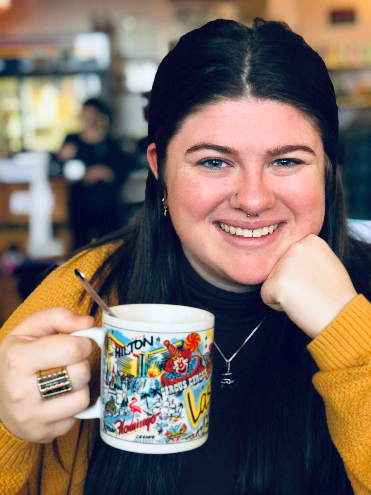

Education
- Bachelor of Science
- Harrisonburg, VA - Estimated Graduation: May 2021
- Double Major in Media Arts and Design and Communication Studies
- Concentrations in Journalism, Advocacy Studies, and Pre-Law
- Minor in Political Communication
Skills
- HTML/CSS
- Adobe Platforms: Adobe Illustrator, Adobe Photoshop, InDesign and Lightroom
- Git/GitHub
- Social Media: Instagram, Facebook, Twitter, LinkedIn, Snapchat
- Photography/Videography
- Advertisement designs
- Editing film and photos
- Public speaking
- Leadership
- Detail oriented
- Social media management
- Adaptability
- Negotiation and Persuasion
- Written and verbal communication
- Time management
- Graphic design
- Aesthetics
- Team-builder
- Self motivated
Design Experience
Student Ambassadors Spring Merchandise - February 2019
- Create original designs for the Student Ambassadors general membership
- Merchandise included a short and long sleeve short, baseball cap, 2 in sticker, and crewneck
- 88% of members ordered items
Class of 2019 Senior Class Shirt - May 2019
- Designed the class shirt sold in James Madison's bookstore for the graduating class of 2019
- 770 shirts sold
Student Ambassadors Fall Merchandise - October 2019
- Design dynamic shirt and crewneck for current members and alumane
- Record number of shirts sold
- 94% of those offered bought items
Involvement
Harrisonburg, VA - 01/2018 - Current
- Competitive organization that provides campus tours to prospective families
- Serve as the first face for visitors of James Madison University
- Responsible for designing merchandise, curating and managing social media pages and providing photography and videography services
- Created new executive position to benefit the organization's internal structure
Harrisonburg, VA - 02/2019 - Current
- Host a two hour talk show once a week on a variety of topics
- Create dynamic dialogue with guests while keeping listeners engaged
- Responsible for playing music, answering calls, controlling volume and sound and overall, maintaining a professional demeanor on air